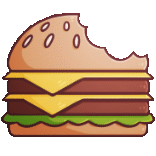
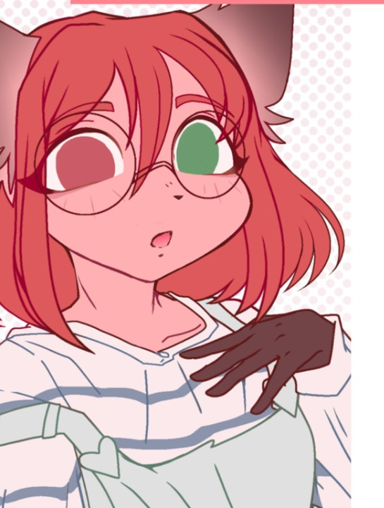

Updated --> 2024Dec11
This document is AI free.
.___________________________________.
| Company Icon |
'▔▔▔▔▔▔▔▔▔▔▔▔▔▔▔▔▔▔▔'
I need a simplified icon for the company.
It should be a simple icon that can be used in a logo.
I need to make it in a vector format.
I want the returned result in png.
I can convert it to svg later.
The icon will be a burger with a bite taken out.
The art style will be focused on the outline of the burger.
The inner part will be colored.
I'd like soft colors for the inner part.
Use dark colors for the outer part.
Here is an approximation of the icon.
(right click to save image)

Here is an approximation of the art style.
I want thicker outlines.
(right click to save image)
